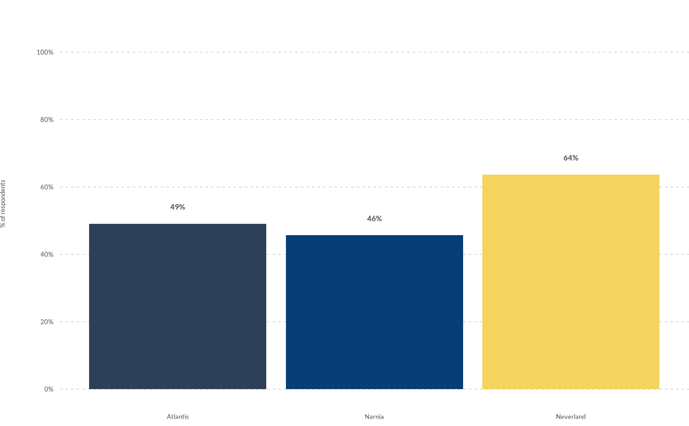

![[Experimental]](figures/lifecycle-experimental.svg)
wjp_bars() takes a data frame with a specific data structure (usually long shaped) and returns a ggplot
object with a bar chart following WJP style guidelines.
Usage
wjp_bars(
data,
target,
grouping,
labels = NULL,
colors = NULL,
cvec = NULL,
direction = "vertical",
stacked = FALSE,
lab_pos = NULL,
expand = FALSE,
order = NULL,
width = 0.9,
ptheme = WJP_theme()
)Arguments
- data
Data frame containing the data to plot
- target
String. Column name of the variable that will supply the values to plot.
- grouping
String. Column name of the variable that supplies the grouping values. Values can be grouped either in the X- or Y- Axis.
- labels
String. Column name of the variable containing the value labels to display in plot. Default is NULL.
- colors
String. Column name of the variable that contains the color grouping. Default is NULL.
- cvec
Named vector with the colors to apply to bars. Vector names should have the values specified by the "colors" variables, while vector values should have
- direction
String. Should the bars be plotted in a "horizontal" or "vertical" way? Default is "vertical".
- stacked
Boolean. If TRUE, bars will be stacked on top of each other per group. Default is FALSE.
- lab_pos
String. Column name of the variable that contains the coordinates for the value labels. Default is NULL.
- expand
Boolean. If TRUE, the plot will give extra space for value labels. Default is FALSE.
- order
String. Column name of the variable that contains the custom order for labels.
- width
Numeric value between 0 and 1. Width of bars as a percentage of the space for each bar. Default is 0.9.
- ptheme
ggplot theme function to apply to the plot. By default, function applies WJP_theme()
Examples
library(dplyr)
#>
#> Attaching package: ‘dplyr’
#> The following objects are masked from ‘package:stats’:
#>
#> filter, lag
#> The following objects are masked from ‘package:base’:
#>
#> intersect, setdiff, setequal, union
library(tidyr)
library(haven)
library(ggplot2)
# Always load the WJP fonts (optional)
wjp_fonts()
# Preparing data
gpp_data <- WJPr::gpp
data4bars <- gpp_data %>%
select(country, year, q1a) %>%
group_by(country, year) %>%
mutate(
q1a = as.double(q1a),
trust = case_when(
q1a <= 2 ~ 1,
q1a <= 4 ~ 0,
q1a == 99 ~ NA_real_
),
year = as.character(year)
) %>%
summarise(
trust = mean(trust, na.rm = TRUE),
.groups = "keep"
) %>%
mutate(
trust = trust*100
) %>%
filter(year == "2022") %>%
mutate(
color_variable = country,
value_label = paste0(
format(
round(trust, 0),
nsmall = 0
),
"%"
),
label_position = trust + 5
)
# Plotting chart
wjp_bars(
data4bars,
target = "trust",
grouping = "country",
labels = "value_label",
lab_pos = "label_position",
colors = "color_variable",
cvec = c("Atlantis" = "#2E4057",
"Narnia" = "#083D77",
"Neverland" = "#F4D35E")
)
